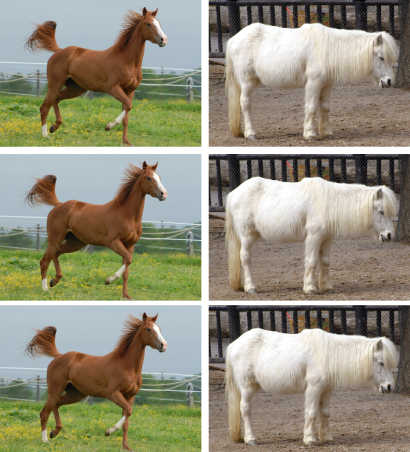
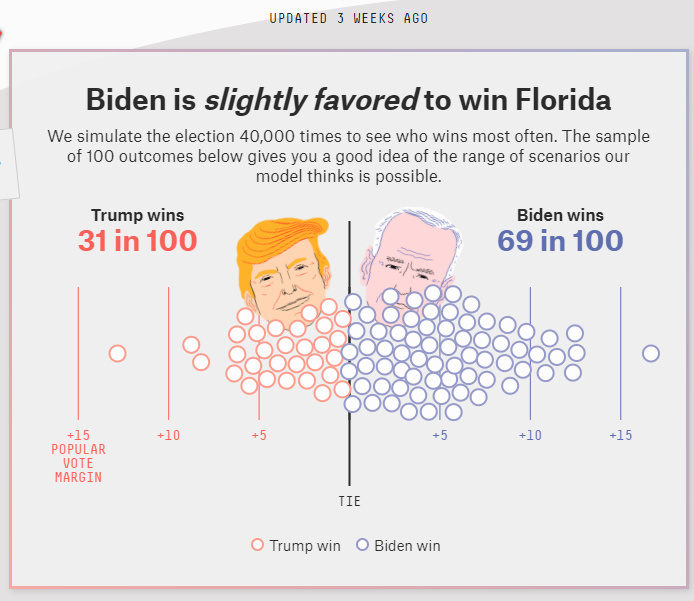
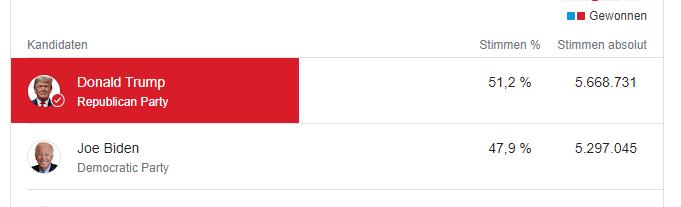

- Im Abschnitt über Performance Indikatoren haben wir gesehen, dass es unterschiedliche Typen von Fehlern gibt.
- Es gibt auch unterschiedliche Gründe, warum machine learning Modelle Fehler machen.
- Diese Gründe können sowohl in den Trainingsdaten als auch im Trainingsprozess liegen.
Im Folgenden sehen wir uns die Gründe näher an.
- Bias eines Modelles: Unterschied zwischen seiner durchschnittlichen Vorhersage und dem wahren Wert.
- Beispiel
- Wir trainieren ein Modell darauf, Katzen und Hunde auf Bildern zu erkennen.
- Katzen kommen im Trainingsdatensatz viel häufiger vor als Hunde.
- Als Resultat sagt das Modell viel wahrscheinlicher "Katze" voraus, als "Hund".
- Das Modell hat einen Katzenbias!

{kind=link}
Quelle Hundebild: Wikimedia Commons, CC BY.
{kind=link}
- Varianz eines Modelles: Streuung von Vorhersagen für ähnliche Eingabewerte.
- Beispiel
- Wir trainieren ein Modell darauf, Ponys und Pferde auf Bildern zu erkennen.
- In den Trainingsdaten kommen nur braune Pferde und weiße Ponys vor.
- Das Modell lernt, braun → Pferd sowie
weiß → Pony zu assoziieren. - Die Performance auf neuen Daten mit weißen Pferden und braunen Ponys ist extrem schlecht.
- Zu hoher Varianz kann es auch kommen, wenn das Modell zu komplex ist (also viele Parameter hat) und damit zu viele Details der Trainingsdaten lernt.
Trainingsdaten
unbekannte Daten
{kind=link}
Quelle Pony Braun: Wikimedia Commons, CC BY-SA.
{kind=link}
Quelle Pferd weiß: Wikimedia commons, CC BY.
{kind=link}
- Im Kontext von maschinellem Lernen wird Bias auch underfitting genannt:
- → der Algorithmus lernt die Verbindungen zwischen Attributen und Ausgaben nicht.
- Varianz wird auch overfitting genannt:
- → der Algorithmus modelliert falsche Korrelationen oder Rauschen anstatt der gewünschten Verbindungen zwischen Attributen und Ausgaben.
Vorhersage für Florida 2020
tatsächliches Ergebnis
Mögliche Fehlerquellen
- Bias: Attribute der Befragten wie Bildung oder Anschluss an ein Festnetztelefon wurden nicht berücksichtigt → die Vorhersage unterschätzt systematisch die Anzahl von Trum-Wähler:innen.
- Varianz: Nicht genug befragte Personen, das Modell lernt die Attribute einzelner Personen → die Vorhersage wird stark von der zufälligen Auswahl der Befragten beeinflusst.
- Ziel: Entdecken von Entzündungen auf Röntgenbildern von Lungen.
- Trainingsdatensatz: Röntgenbilder aus drei Spitälern.
- Häufigkeit von Lungenentzündungen:
- Spital 1: 1.2%
- Spital 2: 34.2%
- Spital 3: 1.0%.
- Das machine learning Modell bekommt sowohl die Bilder als auch die Metadaten (welches Spital, welches Gerät, Uhrzeit etc.) zum Lernen.
Mögliche Probleme?
Das Modell lernt aus welchem Spital die Bilder kommen und nicht die Charakteristika einer Lungenentzündung → Bias.
- Auswahl von Daten: Datensätze sollten die zugrundeliegende Population abbilden.
- Vorurteile und Korrelationen: Attribute können ungewünschte Korrelationen enthalten die Vorurteile widerspiegeln.
- Fehlende Informationen: nicht im Datensatz enthaltene Attribute können sehr wichtig für das Resultat sein.
- Andere Datenquelle: wenn die Datenquelle für die Trainingsdaten eine andere ist als für die Daten im Anwendungsfall.
Beispiel: ein Algorithmus zur Gesichtserkennung der auf Bildern von mehrheitlich weißen Männern trainiert ist und schwarze Frauen sehr schlecht erkennt.
Beispiel: ein recruiting Algorithmus der die Postleitzahl mit einbezieht und dadurch Migranten diskriminiert.
Beispiel: Vorhersage der Kauffreudigkeit von Kunden. Kunden aus Land X geben doppelt so viel Geld aus wie Kunden aus Land Y aber das Herkunftsland wird nicht erhoben und ist nicht für die Vorhersage verfügbar.
Beispiel: die Trainingsdaten für einen Bilderkennungsalgorithmus werden mit einer Nikon Kamera aufgenommen, die Daten für die Anwendung kommen alle von Canon Kameras.
Beim überwachten Lernen tendieren Algorithmen dazu, ihre Trainingsdaten "auswendig" zu lernen.
→ der Vorhersagefehler auf den Trainingsdaten ist kein gutes Maß für die Varianz!
Training-Test Ansatz
- Teile die Daten mit bekannten Klassen in zwei Teile, den Trainingsdatensatz (z.B. 80% der Daten) und den Testdatensatz (z.B. 20% der Daten).
- Trainiere das Modell nur mit dem Trainingsdatensatz.
- Sage mit dem trainierten Modell die Klassen im Testdatensatz voraus.
- Vergleiche die vorhergesagten mit den wahren Klassen.
- (Optional) Teile einen dritten Teil ab (Validierungsdaten) um das Modell während der Entwicklung zu evaulieren.

- Fehler von machine learning Modellen haben zwei Gründe:
- Bias (Verzerrung): eine systematische Abweichung der Modellvorhersagen vom wahren Wert.
- Varianz: eine starke Streuung von Vorhersagen für ähnliche Eingabewerte.
- Gründe für Bias und Varianz können sowohl in den Trainingsdaten als auch im Trainingsprozess liegen.
- Systematische Identifikation von Verzerrungen in Trainingsdaten hilf, Modellbias zu verringern.
- Aufteilen der Daten in Training- und Testdatensatz hilft overfitting zu verhindern und die Varianz korrekt einzuschätzen.